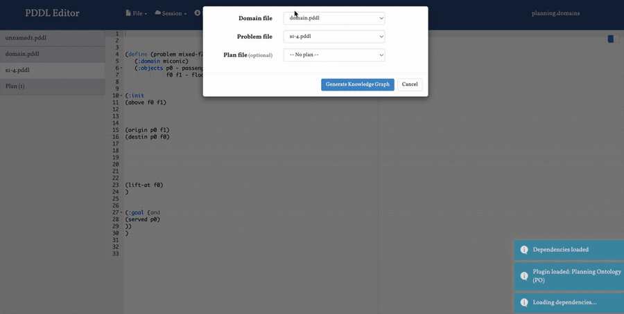

The Planning Ontology Tool
An Interactive Tool on Planning.Domains
A browser plugin for the Planning.Domains PDDL editor. It turns PDDL into an RDF/OWL knowledge graph you can visualize and query — entirely client-side, no server.
PyodidePython in the browser
RDFLibbuilds the graph
D3.jsinteractive visualization
ComunicaSPARQL querying
PURL · github.com/ai4society/planning-ontology-tool
editor.planning.domains
editor.planning.domains
